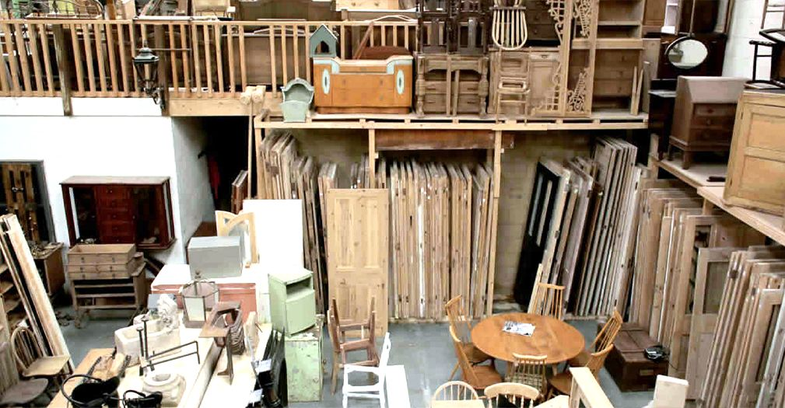
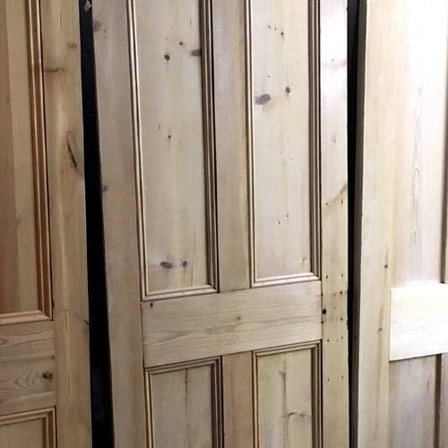
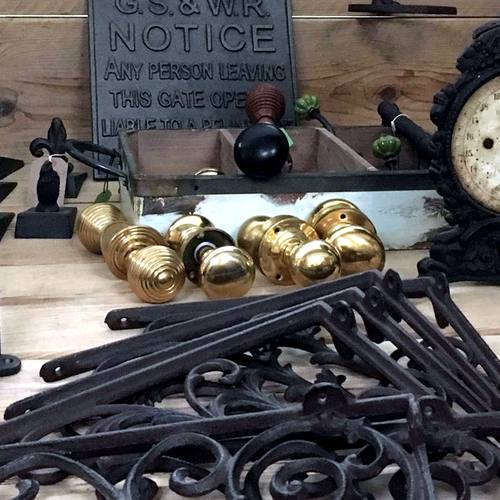

Paint stripping & restoration of period doors
The longest established paint stripping and renovation company in East Anglia. We strip and restore original period doors and shutters, and keep a showroom of period doors, fireplaces, ironmongery and handmade tables.
- Find us2 Anson Road, Norwich Airport Industrial Estate, Norwich, Norfolk NR6 6ED
- OpenMon to Fri 7.30am to 4.30pm, Sat 7.00am to 1.00pm

400+original period doors in stock
Our services
- 01

Paint stripping
Doors and shutters stripped back to the wood, ready to finish or repaint. We can also advise on furniture.
- 02

Finishing & restoration
Sanding, repairs and finishing, from small repairs to total restoration, if you lack the time or space to do it yourself.
- 03

Showroom & products
Original period doors, fireplaces, ironmongery, signs, our own stains and oils, and handmade tables and butchers blocks.
Over 40 years of period doors
Anglian Paint Strippers is the longest established paint stripping and renovation company in East Anglia. We have been established for over 40 years, specialising in the stripping and restoration of period doors, and have built up a reputation for quality and service through both private and business projects.
We aim to paint strip and restore items sympathetically in order to achieve the best results for our customers. Unlike some other companies, we welcome customers to come and visit our workshop, see what we do, and view stock items or customers' items that are being worked on.
We operate on a friendly and communicative basis and are happy to help and advise on any queries you may have.
Who we work for
- Residential customers
- Businesses
- Listed buildings
- Churches
- The Broads Authority
Original period doors, fireplaces, architectural items & ironmongery
Visit our showroom to view our range of original period doors, handmade tables and butchers blocks, stools, architectural ironmongery and accessories.


Contact us
2 Anson Road, Norwich Airport Industrial Estate, Norwich, Norfolk NR6 6ED- Tel01603 632976
- Mobile07881 813180
- Emailandrew.mitchell5@btconnect.com
| Monday | 7.30am to 4.30pm |
|---|---|
| Tuesday | 7.30am to 4.30pm |
| Wednesday | 7.30am to 4.30pm |
| Thursday | 7.30am to 4.30pm |
| Friday | 7.30am to 4.30pm |
| Saturday | 7.00am to 1.00pm |
| Sunday | Closed |